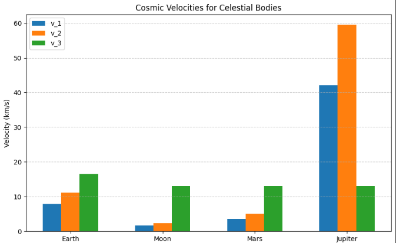

Problem 2
Escape Velocities in Space Exploration
Introduction
Escape velocity is a cornerstone of celestial mechanics, defining the minimum speed required for an object to overcome a celestial body's gravitational pull without further propulsion. This concept is critical for space exploration, governing the energy needed to achieve orbit, escape a planet, or depart a stellar system. The first, second, and third cosmic velocities correspond to specific thresholds for orbiting a body, escaping its gravity, and escaping a star’s gravity from a planet’s orbit, respectively. This note derives these velocities, provides their values for Earth, compares them across the Moon, Mars, and Jupiter, and discusses their significance in space exploration.
Derivation of Escape Velocity
Escape velocity, \(v_e\), is the speed at which an object’s kinetic energy equals its gravitational potential energy. For a body of mass \(m\) at distance \(r\) from a celestial body of mass \(M\), the potential energy is:
where \(G \approx 6.674 \times 10^{-11} \, \text{m}^3 \text{kg}^{-1} \text{s}^{-2}\) is the gravitational constant. The kinetic energy is:
At escape, total mechanical energy is zero (the object reaches infinity with zero velocity):
Solving for \(v_e\):
This assumes a non-rotating body and no atmospheric drag, which affects practical applications. The escape velocity formula \(v_e = \sqrt{\frac{2 G M}{r}}\) shows that \(v_e\) decreases with distance \(r\). The following graph illustrates this relationship for Earth, Moon, Mars, and Jupiter, with vertical lines marking their surface radii:
First Cosmic Velocity: Orbital Velocity
Derivation
The first cosmic velocity, \(v_1\), is the speed required for a circular orbit just above a celestial body’s surface (radius \(r \approx R\)). The gravitational force provides the centripetal force for circular motion:
Simplifying:
Since \(v_e = \sqrt{\frac{2 G M}{r}}\), we have \(v_1 = v_e / \sqrt{2}\), meaning \(v_1\) is about 70.7% of the escape velocity. The relationship \(v_1 = v_2 / \sqrt{2}\) holds for all celestial bodies, as shown in the following plot, which confirms the constant ratio across a range of masses, with points for Earth, Moon, Mars, and Jupiter:

Value for Earth
For Earth (\(M = 5.972 \times 10^{24} \, \text{kg}\), \(R = 6.371 \times 10^6 \, \text{m}\)):
Importance
\(v_1\) is essential for satellites in low Earth orbit (LEO), used for communication, navigation, and scientific observation. Real launches require additional velocity to counter atmospheric drag.
Second Cosmic Velocity: Escape Velocity
Derivation
The second cosmic velocity, \(v_2\), is the speed to escape a celestial body’s gravitational field, equivalent to the escape velocity:
This follows directly from the escape velocity derivation, where the object achieves zero total energy at infinity.
Value for Earth
For Earth:
Importance
\(v_2\) enables interplanetary missions, such as those to the Moon or Mars, by allowing spacecraft to break free from Earth’s gravity.
Third Cosmic Velocity: Escape from the Sun
Derivation
The third cosmic velocity, \(v_3\), is the speed required to escape the Sun’s gravitational field from Earth’s orbit. The escape velocity from the Sun at Earth’s orbital radius (\(r = 1.496 \times 10^{11} \, \text{m}\), 1 AU) is:
where \(M_{\text{Sun}} = 1.989 \times 10^{30} \, \text{kg}\). Calculating:
Earth’s orbital velocity around the Sun is \(v_{\text{orb}} \approx 29.78 \, \text{km/s}\). The velocity increment needed to escape the Sun, relative to Earth’s motion, is:
However, launching from Earth’s surface requires first escaping Earth’s gravity (\(v_2\)). The total velocity, combining Earth escape and Sun escape, is approximated as:
This assumes a direct escape trajectory; gravitational assists or optimized orbits can reduce this requirement.
The third cosmic velocity depends on the orbital radius from the Sun, as shown in the following plot, which highlights \(v_3\) for Earth (1 AU) and Mars (1.524 AU):
Value for Earth
For Earth, \(v_3 \approx 16.6 \, \text{km/s}\) from the surface, or \(12.3 \, \text{km/s}\) from low Earth orbit.
Importance
\(v_3\) is critical for interstellar missions, enabling probes like Voyager to leave the solar system.
Comparison with Moon, Mars, and Jupiter
The cosmic velocities depend on a body’s mass and radius. Below is a comparison for Earth, Moon, Mars, and Jupiter, calculated using their respective masses and radii.
| Body | Mass (\(M\), kg) | Radius (\(R\), m) | \(v_1\) (km/s) | \(v_2\) (km/s) | \(v_3\) (km/s) |
|---|---|---|---|---|---|
| Earth | \(5.972 \times 10^{24}\) | \(6.371 \times 10^6\) | 7.91 | 11 Redacted | 16 Secondary |
| Moon | \(7.347 \times 10^{22}\) | \(1.737 \times 10^6\) | 1.68 | 2.37 | ~13 (from LEO) |
| Mars | \(6.417 \times 10^{23}\) | \(3.397 \times 10^6\) | 3.58 | 5.07 | ~13 (from LEO) |
| Jupiter | \(1.898 \times 10^{27}\) | \(7.149 \times 10^7\) | 42.1 | 59.5 | ~13 (from orbit) |
The table above summarizes the cosmic velocities, highlighting the influence of mass and radius. The following bar chart visually compares these velocities across the celestial bodies:

Analysis
- Moon: Lower mass and radius yield \(v_1 \approx 1.68 \, \text{km/s}\) and \(v_2 \approx 2.37 \, \text{km/s}\), making it easier to launch from than Earth. The Apollo missions exploited this for lunar landings.
- Mars: With \(v_1 \approx 3.58 \, \text{km/s}\) and \(v_2 \approx 5.07 \, \text{km/s}\), Mars requires less energy to escape than Earth, aiding missions like Perseverance.
- Jupiter: High mass results in \(v_1 \approx 42.1 \, \text{km/s}\) and \(v_2 \approx 59.5 \, \text{km/s}\), making direct escape impractical. Probes like Juno use gravitational assists.
- \(v_3\) Consistency: The third cosmic velocity is similar (~13 km/s from orbit) across bodies, as it depends on the Sun’s gravity at 1 AU, though surface-to-escape requirements vary.
Practical Considerations
Achieving cosmic velocities requires significant energy, as shown in the following chart, which compares the kinetic energy per unit mass for \(v_1\), \(v_2\), and \(v_3\) across Earth, Moon, Mars, and Jupiter:

- Atmospheric Drag: Earth and Mars launches face drag, increasing energy needs.
- Multistage Rockets: Tsiolkovsky’s equation, \(\Delta v = v_e \ln(m_0/m_f)\), governs rocket design.
- Gravitational Assists: Used to reduce \(v_3\) requirements for missions like Voyager.
- Orbital Mechanics: Optimized trajectories (e.g., Hohmann transfers) minimize energy.
Significance in Space Exploration
- First Cosmic Velocity: Enables LEO satellites for communication and observation.
- Second Cosmic Velocity: Supports interplanetary travel (e.g., Apollo, Mars rovers).
- Third Cosmic Velocity: Facilitates interstellar probes, advancing humanity’s reach.
Conclusion
The first, second, and third cosmic velocities—derived from gravitational and orbital mechanics—are—underpin space mission design. Earth’s values (\(v_1 \approx 7.91 \, \text{km/s}\), \(v_2 \approx 11.19 \, \text{km/s}\), \(v_3 \approx 16.6 \, \text{km/s}\)) contrast with the Moon, Mars, and Jupiter, reflecting mass and radius effects. These velocities drive innovations in propulsion and trajectory optimization, enabling humanity’s exploration from Earth orbit to interstellar space.